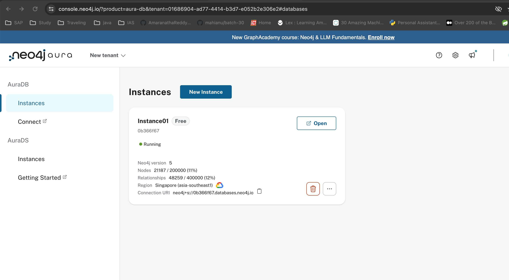
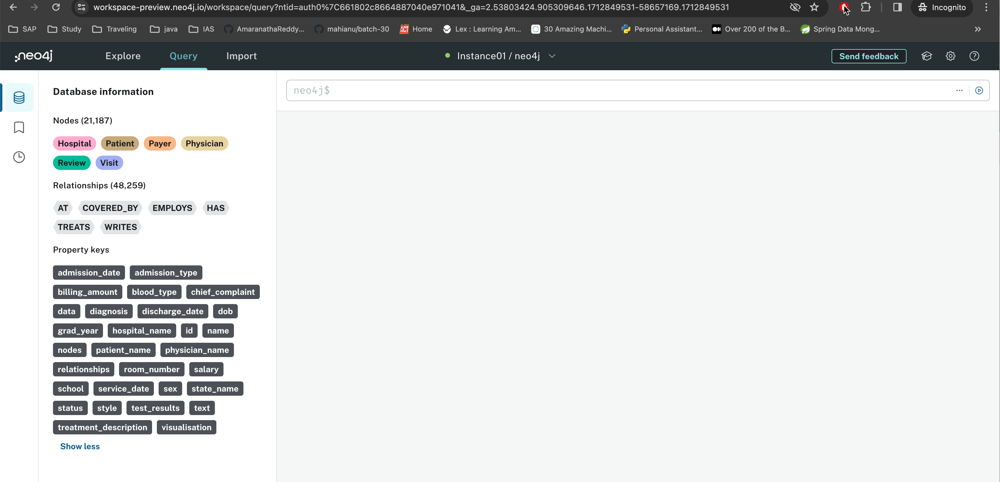

Upload Data to Neo4j
With a running Neo4j instance and an understanding of the nodes, properties, and relationships you want to store, you can move the hospital system data into Neo4j. For this, you’ll create a folder called hospital_neo4j_etl with a few empty files. You’ll also want to create a docker-compose.yml file in your project’s root directory:
./
│
├── hospital_neo4j_etl/
│ │
│ ├── src/
│ │ ├── entrypoint.sh
│ │ └── hospital_bulk_csv_write.py
│ │
│ ├── Dockerfile
│ └── pyproject.toml
│
├── .env
└── docker-compose.yml
Your .env file should have the following environment variables:
NEO4J_URI=<YOUR_NEO4J_URI>
NEO4J_USERNAME=<YOUR_NEO4J_URI>
NEO4J_PASSWORD=<YOUR_NEO4J_PASSWORD>
HOSPITALS_CSV_PATH=https://raw.githubusercontent.com/hfhoffman1144/langchain_neo4j_rag_app/main/data/hospitals.csv
PAYERS_CSV_PATH=https://raw.githubusercontent.com/hfhoffman1144/langchain_neo4j_rag_app/main/data/payers.csv
PHYSICIANS_CSV_PATH=https://raw.githubusercontent.com/hfhoffman1144/langchain_neo4j_rag_app/main/data/physicians.csv
PATIENTS_CSV_PATH=https://raw.githubusercontent.com/hfhoffman1144/langchain_neo4j_rag_app/main/data/patients.csv
VISITS_CSV_PATH=https://raw.githubusercontent.com/hfhoffman1144/langchain_neo4j_rag_app/main/data/visits.csv
REVIEWS_CSV_PATH=https://raw.githubusercontent.com/hfhoffman1144/langchain_neo4j_rag_app/main/data/reviews.csv
Notice that you’ve stored all of the CSV files in a public location on GitHub. Because your Neo4j AuraDB instance is running in the cloud, it can’t access files on your local machine, and you have to use HTTP or upload the files directly to your instance. For this example, you can either use the link above, or upload the data to another location.
Note: If you’re uploading proprietary data to Neo4j, always ensure that it’s stored in a secure location and transferred appropriately. The data used for this project is all synthetic and not proprietary, so there’s no problem with uploading it over a public HTTP connection. However, this would not be a good idea in practice. You can read more about secure ways to import data into Neo4j in their documentation.
Once you have your .env file populated, open pyproject.toml, which provides configuration, metadata, and dependencies defined in the TOML format:
[project]
dependencies = [
....
"neo4j==5.14.1",
"retry==0.9.2"
]
[tool.poetry.group.dev.dependencies]
....
black = "^24.3.0"
flake8 = "^7.0.0"
This project is a bare bones extract, transform, load (ETL) process that moves data into Neo4j, so it’s only dependencies are neo4j and retry. The main script for the ETL is hospital_neo4j_etl/src/hospital_bulk_csv_write.py. It’s too long to include the full script here, but you’ll get a feel for the main steps hospital_neo4j_etl/src/hospital_bulk_csv_write.py executes. You can copy the full script from the materials:
First, you import dependencies, load environment variables, and configure logging:
import os
import logging
from retry import retry
from neo4j import GraphDatabase
HOSPITALS_CSV_PATH = os.getenv("HOSPITALS_CSV_PATH")
PAYERS_CSV_PATH = os.getenv("PAYERS_CSV_PATH")
PHYSICIANS_CSV_PATH = os.getenv("PHYSICIANS_CSV_PATH")
PATIENTS_CSV_PATH = os.getenv("PATIENTS_CSV_PATH")
VISITS_CSV_PATH = os.getenv("VISITS_CSV_PATH")
REVIEWS_CSV_PATH = os.getenv("REVIEWS_CSV_PATH")
NEO4J_URI = os.getenv("NEO4J_URI")
NEO4J_USERNAME = os.getenv("NEO4J_USERNAME")
NEO4J_PASSWORD = os.getenv("NEO4J_PASSWORD")
logging.basicConfig(
level=logging.INFO,
format="%(asctime)s [%(levelname)s]: %(message)s",
datefmt="%Y-%m-%d %H:%M:%S",
)
LOGGER = logging.getLogger(__name__)
# ...
You import the GraphDatabase class from neo4j to connect to your running instance. Notice here that you’re no longer using Python-dotenv to load environment variables. Instead, you’ll pass environment variables into the Docker container that runs your script. Next, you’ll define functions to move hospital data into Neo4j following your design:
# ...
NODES = ["Hospital", "Payer", "Physician", "Patient", "Visit", "Review"]
def _set_uniqueness_constraints(tx, node):
query = f"""CREATE CONSTRAINT IF NOT EXISTS FOR (n:{node})
REQUIRE n.id IS UNIQUE;"""
_ = tx.run(query, {})
@retry(tries=100, delay=10)
def load_hospital_graph_from_csv() -> None:
"""Load structured hospital CSV data following
a specific ontology into Neo4j"""
driver = GraphDatabase.driver(
NEO4J_URI, auth=(NEO4J_USERNAME, NEO4J_PASSWORD)
)
LOGGER.info("Setting uniqueness constraints on nodes")
with driver.session(database="neo4j") as session:
for node in NODES:
session.execute_write(_set_uniqueness_constraints, node)
# ...
# ...
First, you define a helper function, _set_uniqueness_constraints(), that creates and runs queries enforcing each node to have a unique ID. In load_hospital_graph_from_csv(), you instantiate a driver that connects to your Neo4j instance and set uniqueness constraints for each hospital system node.
Notice the @retry decorator attached to load_hospital_graph_from_csv(). If load_hospital_graph_from_csv() fails for any reason, this decorator will rerun it one hundred times with a ten second delay in between tries. This comes in handy when there are intermittent connection issues to Neo4j that are usually resolved by recreating a connection. However, be sure to check the script logs to see if an error reoccurs more than a few times.
Next, load_hospital_graph_from_csv() loads data for each node and relationship:
# ...
@retry(tries=100, delay=10)
def load_hospital_graph_from_csv() -> None:
"""Load structured hospital CSV data following
a specific ontology into Neo4j"""
# ...
LOGGER.info("Loading hospital nodes")
with driver.session(database="neo4j") as session:
query = f"""
LOAD CSV WITH HEADERS
FROM '{HOSPITALS_CSV_PATH}' AS hospitals
MERGE (h:Hospital {{id: toInteger(hospitals.hospital_id),
name: hospitals.hospital_name,
state_name: hospitals.hospital_state}});
"""
_ = session.run(query, {})
# ...
if __name__ == "__main__":
load_hospital_graph_from_csv()
Each node and relationship is loaded from their respective csv files and written to Neo4j according to your graph database design. At the end of the script, you call load_hospital_graph_from_csv() in the name-main idiom, and all of the data should populate in your Neo4j instance.
After writing hospital_neo4j_etl/src/hospital_bulk_csv_write.py, you can define an entrypoint.sh file that will run when your Docker container starts:
#!/bin/bash
# Run any setup steps or pre-processing tasks here
echo "Running ETL to move hospital data from csvs to Neo4j..."
# Run the ETL script
python hospital_bulk_csv_write.py
This entrypoint file isn’t technically necessary for this project, but it’s a good practice when building containers because it allows you to execute necessary shell commands before running your main script.
The last file to write for your ETL is the Docker file. It looks like this:
version: '3'
services:
hospital_neo4j_etl:
build:
context: ./hospital_neo4j_etl
env_file:
- .env
The ETL will run as a service called hospital_neo4j_etl, and it will run the Dockerfile in ./hospital_neo4j_etl using environment variables from .env. Since you only have one container, you don’t need docker-compose yet. However, you’ll add more containers to orchestrate with your ETL in the next section, so it’s helpful to get started on docker-compose.yml.
To run your ETL, open a terminal and run:
docker-compose up --build
Once the ETL finishes running, return to your Aura console: 
Click Open and you’ll be prompted to enter your Neo4j password. After successfully logging into the instance, you should see a screen similar to this: 
As you can see under Database Information, all of the nodes, relationships, and properties were loaded. There are 21,187 nodes and 48,259 relationships. You’re ready to start writing queries!